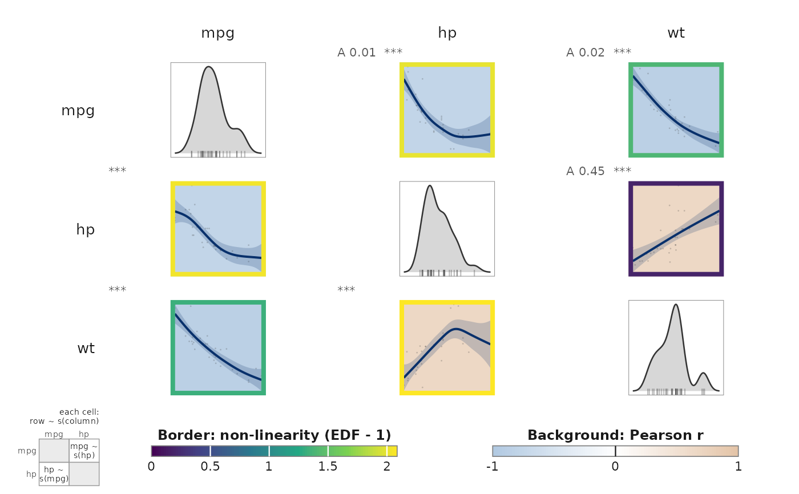

![[Stable]](figures/lifecycle-stable.svg)
Collects every appearance knob of plot.janusplot_fit(),
janusplot_pair() and janusplot() into one validated object. Model
settings live in janusplot_fit(), what the matrix encodes lives in
plot()'s colour_by, background_by and annotations, and how it is
drawn lives here.
Usage
janusplot_style(
colour_channel = c("border", "tile", "fill"),
palette = NULL,
background_palette = "BuOr",
background_strength = 0.35,
annotation_position = c("strip", "corners"),
show_data = TRUE,
adjusted_points = c("partial", "raw"),
identity_line = FALSE,
show_ci = TRUE,
point_size = 0.4,
point_alpha = 0.25,
curve_colour = "#08306b",
curve_width = 2,
band_alpha = 0.2,
border_width = NULL,
density_threshold = 2000L,
group_palette = "Okabe-Ito",
group_max_levels = 8L,
labels = c("border", "none"),
label_srt = 45,
diagonal = c("auto", "blank", "name", "density"),
glyph_style = c("ascii", "unicode"),
show_shape_legend = "auto",
show_glossary = TRUE,
show_key = TRUE,
legend_position = c("right", "bottom"),
pair_background = FALSE,
text_size = "auto",
base_family = "",
compact = c("auto", "always", "never"),
compact_threshold = 12L,
compact_levels = NULL,
focus_dim_alpha = 0.25
)
# S3 method for class 'janusplot_style'
print(x, ...)Arguments
- colour_channel
Where the
colour_byvalue is painted:"border"(the default) colours the panel border,"tile"fills a small bottom-right corner tile and leaves the border grey,"fill"washes the whole cell at alpha 0.45 and needsbackground_by = "none".- palette
Name of the colour palette for the
colour_byscale, orNULL(the default) for"RdBu"whencolour_byis a correlation and"viridis"otherwise. Sequential choices:"viridis","magma","inferno","plasma","cividis","mako","rocket","turbo"(not colour-blind safe),"YlOrRd","YlGnBu","Blues","Greens". Diverging choices:"RdYlBu","RdBu","PuOr","Spectral"(not colour-blind safe). A sequential palette under a correlationcolour_byis replaced by"RdBu".- background_palette
Diverging palette of the correlation background, one of
"BuOr"(the default: blue negative, orange positive; its two sides stay the furthest apart under simulated red-green and blue-yellow colour-vision deficiency),"RdBu"(blue negative, red positive),"RdYlBu","PuOr"and"Spectral".- background_strength
Number in
(0, 1],0.35by default: how far from white towards the palette end the background of a cell with correlation of magnitude one is drawn. A cell with correlationris drawnabs(r) * background_strengthof the way, as an opaque colour.- annotation_position
Where the
annotationsofplot()are written:"strip"(the default) in a thin strip above the data area,"corners"inside the panel where 0.2.0 placed them (A, EDF, r and n bottom-left, significance top-right, shape code top-left, shape glyph bottom-right).- show_data
Logical.
TRUE(the default) draws the raw points of each cell behind the curve on fit cells; derivative cells never carry points.- adjusted_points
Points of a fit with
adjust:"partial"(the default) draws partial residuals, each observation with its own adjustment replaced by the average adjustment, so the points sit around the curve as they do without adjustment;"raw"draws the observed values. Partial residuals need the identity link; with another link the points stay raw.- identity_line
Logical.
TRUEadds the dashed liney = xto the z-score panels ofjanusplot_pair()withdisplay = "both". There it is the standard-deviation line: a curve flatter than it, read along its own predictor axis, regresses towards the mean.FALSE(the default) leaves it out.- show_ci
Logical.
TRUE(the default) draws the 95 percent band around the curve, and around a derivative curve when the fit stored one.- point_size
Size of the raw points;
0.4by default.janusplot_pair()draws the points at this size. The matrix views draw them without an outline and shrink them with the variable count, as they shrink the text: at the default size a point is about 1.25 points across at four variables and 0.85 at eight.- point_alpha
Opacity of the raw points in
[0, 1];0.25by default.- curve_colour
Colour of the fitted curve and its band; the dark blue
"#08306b"by default.- curve_width
Width of the fitted curve in points;
2by default.- band_alpha
Opacity of the band in
[0, 1];0.20by default.- border_width
Width in points of a border that carries a colour, or
NULL(the default) for the width scaled with the variable count described in Details.- density_threshold
Positive integer. A cell whose row count exceeds it draws the points as a binned density (
ggplot2::geom_bin2d()with 40 bins) instead of points;2000Lby default. Cells coloured bygroupalways draw points.- group_palette
Colours for the levels of
plot()'sgroupcolumn: the name of a palette known togrDevices::palette.colors()("Okabe-Ito"by default) or a character vector of colours with at least one colour per level.- group_max_levels
Positive integer. The largest number of levels a
groupcolumn may have;8Lby default.- labels
Where variable names are drawn:
"border"(the default) along the top and left margins,"none"nowhere.- label_srt
Rotation in degrees of the top border labels;
45by default.- diagonal
Content of the diagonal cells:
"auto"(the default) and"density"draw the kernel density of the variable with a rug of its raw values, plus one density per level when the plot has agroup;"blank"leaves them empty and"name"writes the variable name.- glyph_style
"ascii"(the default) or"unicode"for the shape glyphs, the derivative order labels and the k-check warning sign.- show_shape_legend
"auto"(the default) attaches the shape-categories legend below the matrix when the cells carry the two-letter shape code it decodes (annotationsincludes"code");TRUEalways attaches it,FALSEnever.- show_glossary
Logical.
TRUE(the default) attaches a caption describing the abbreviations and encodings on the plot.- show_key
Logical.
TRUE(the default) draws in the top-left corner of the matrix a two-by-two key with the first two variables, showing that every cell isrow ~ s(column). It needslabels = "border".- legend_position
Where the matrix views put the colour bars:
"right"(the default) in a column beside the matrix, which suits a wide screen;"bottom"as horizontal bars under the matrix, beside the group legend, which suits a figure one page wide. Under"bottom"the key moves from the corner to the left of the bars, so the top border holds the variable names alone and the cells take the full width.- pair_background
Logical.
TRUEtints the panels ofjanusplot_pair()by the pair's Pearson correlation, asbackground_by = "pearson"tints the matrix.FALSE(the default) leaves them plain, because the pair view draws no colour bar; add"r"toannotationsto print the correlation in the strip. A fit withadjustdraws no pair background.- text_size
"auto"(the default), a single base size in points, a named list of element sizes, orNULLfor no text; see Details.- base_family
Font family of every text,
""(the default) for the device's sans-serif font.- compact
Scale-aware content suppression as the variable count grows:
"auto"(the default) climbs the tier ladder atcompact_threshold,"always"forces at least tier 1,"never"keeps every cell at tier 0. Tier 1 drops the points and compacts the strip, tier 2 drops the band, tier 3 drops the curve and shows the shape glyph alone.- compact_threshold
Integer of at least 2. The variable count at which tier 1 starts under
compact = "auto";12Lby default.- compact_levels
Optional named list with entries
t1,t2,t3giving the variable counts at which each tier starts, witht1 < t2 < t3.NULL(the default) usescompact_threshold,compact_threshold + 6andcompact_threshold + 13.- focus_dim_alpha
Opacity in
[0, 1]of the grey wash on cells outside thefocus_byselection;0.25by default.- x
A
janusplot_styleobject.- ...
Ignored by the
print()method.
Value
A named list of class janusplot_style holding the 33 values
above, with text_size stored as given. print() lists the values
that differ from the defaults and returns x invisibly.
Details
The default cell has a thick panel border carrying the colour_by
value, a background tinted by the pair's signed correlation (white at
zero, background_strength of the way to the palette's negative or
positive end at minus or plus one), a thin strip above the data area with the
annotations in small grey text, grey points behind a dark blue curve
with a 20 percent band, and, for cells with more than
density_threshold rows, a light grey binned density in place of the
points. A key in the empty top-left corner states the convention of
every cell, row ~ s(column).
text_size sets every text of the view. "auto" scales the strip and
the diagonal names with the variable count and keeps the strip at 5
points or more. A single number is a base size in points: the strip and
the axis text are 0.8 of it, the border labels 1.0, the diagonal names
1.2, the legends and the glossary 0.9, the corner key 0.75 and the
title 1.3. A named list sets elements one by one: strip (the strip
and the in-panel annotations), labels (the border variable names),
diagonal (the names on the diagonal), legend (the colour bars and
the group legend), key (the corner key), glossary (the caption),
title (the title) and axis (the axes of the pair view). Each element
is a size in points, "auto", or NULL, which removes that text;
elements not named stay "auto". text_size = NULL removes every text.
Widths are in points, as for text: a width w is drawn as the ggplot2
linewidth w / ggplot2::.pt. border_width = NULL scales the border
with the variable count: 6.8 points (linewidth 2.4) at four variables,
thicker for fewer, thinner for more, and never below 2.8 points
(linewidth 1.0).
colour_channel = "fill" with colour_by = "pearson" and
background_by = "none" reproduces the 0.2.0 look.
See also
plot.janusplot_fit() and janusplot(), which take the
object as style.
Other smooth-associations:
janusplot(),
janusplot_compare(),
janusplot_curves(),
janusplot_direction(),
janusplot_fit(),
janusplot_pair(),
janusplot_reference(),
plot.janusplot_compare(),
plot.janusplot_fit()
Examples
janusplot_style()
#> janusplot style: all defaults
janusplot_style(colour_channel = "tile", point_alpha = 0.4)
#> janusplot style: 2 non-default values
#> colour_channel = "tile"
#> point_alpha = 0.4
# Every text from one base size; no glossary text and no corner key.
janusplot_style(text_size = list(strip = 7, glossary = NULL, key = NULL))
#> janusplot style: 1 non-default value
#> text_size = list(strip = 7, glossary = NULL, key = NULL)
fit <- janusplot_fit(mtcars[, c("mpg", "hp", "wt")], engine = "gam")
# A figure for a printed page: legends under the matrix, level column
# names, and no title or glossary, which the figure caption replaces.
plot(fit, style = janusplot_style(
legend_position = "bottom", label_srt = 0, show_glossary = FALSE,
text_size = list(title = NULL)
))
